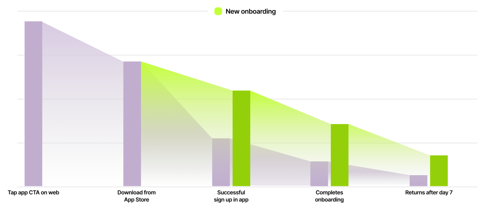
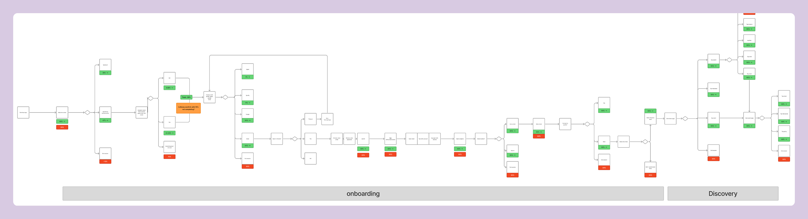
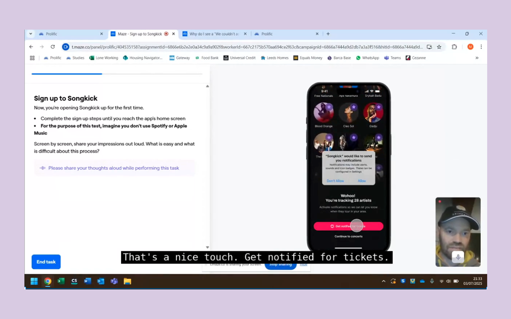
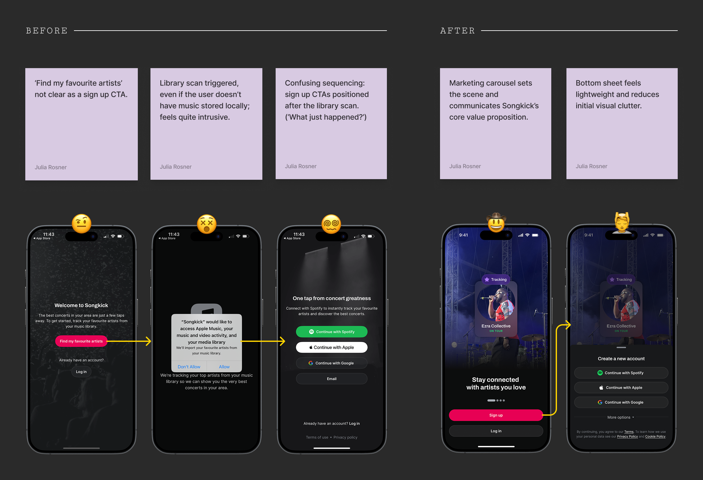
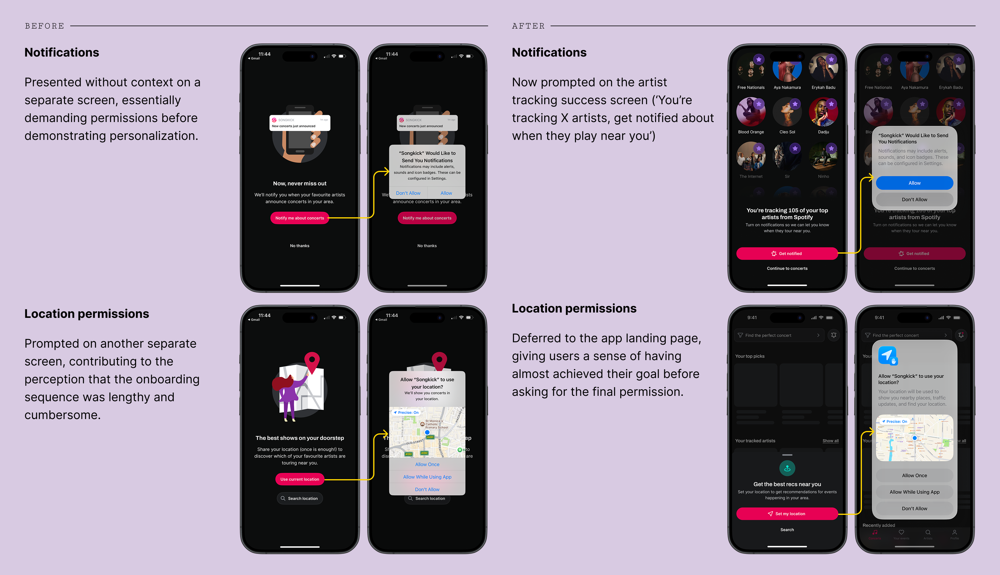
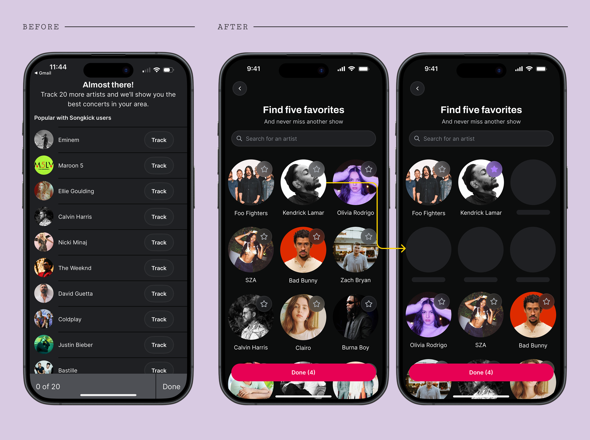
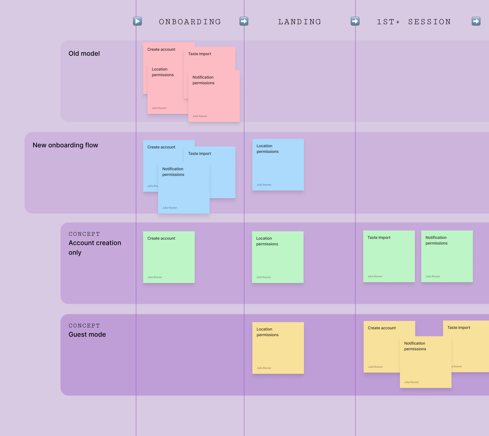

Overview
Songkick is a concert discovery app with 460K monthly active users. The product helps people track their favourite artists and get notified about live shows in their area. Despite strong top-of-funnel performance, a significant portion of new users were dropping off before ever experiencing the app's core value—a personalised concert feed.
Over 6 weeks, I led the end-to-end redesign of the onboarding flow: from research and hypothesis through to prototyping, testing, and handoff.
The new flow in action
Steps to complete in the prototype
- Sign up using a social sign up method
- Connect Spotify, complete taste import
- Allow notifications
- Allow location permissions

Day 7 retention doubled in the first two weeks of rollout
Core problem
40% of new users were not completing the onboarding flow. And many of those who did land in the app arrived in a non-personalised experience, because they hadn't sufficiently engaged with the onboarding activation steps.
Only a third of new installs resulted in users taking a high-value action — marking attendance or clicking a ticket link — within the first session. That meant most users weren't experiencing what makes Songkick compelling before churning.

The original onboarding flow was lengthy and overly complex, leading to significant dropoff at various steps
Hypothesis
The existing onboarding flow was lengthy and cumbersome, failing to adequately communicate Songkick's core value proposition. By re-sequencing, shortening, and properly contextualising core activation jobs—connecting a music streaming service, asking for device permissions—we could reduce drop-off and ensure users landed in a personalised, sticky experience that would motivate them to keep exploring.
Research
Since the onboarding flow would need to be replaced end-to-end—representing significant product risk—I led an extensive quantitative and qualitative research effort. This was essential for building stakeholder confidence and securing roadmap prioritisation.
Quantitative analysis identified three key hurdles to activation:
- Not tracking enough artists (insufficient personalisation)
- Not allowing push notifications (no re-engagement channel)
- Overall length of onboarding (bad first impression, fatigue)
Unmoderated user testing (10 users via Maze) on a prototype revealed:
- Marketing carousel had low engagement but positive sentiment
- 'Get notified' CTA was effective; notification prompt placement felt natural
- Initial mixed feedback on location prompt — resolved by improving flow contextualisation
- Overall flow rated as easy and fast, with one user commenting: "Very quick, not an issue... I quite enjoyed it, actually."

Unmoderated testing via Maze.
Addressing redundancy
On iOS, the existing flow asked users to complete a local library scan before signing up—a largely obsolete step, since very few people still store music locally. This created three problems: an unclear CTA ('Find my favourite artists'), an intrusive permissions request before any value had been demonstrated, and confusing sequencing where sign-up CTAs appeared after the library scan.
I proposed consolidating the entry point into a single, high-efficiency screen: a marketing carousel to communicate Songkick's value, with all authentication options contained within two clear bottom sheets. This eliminated two steps from the journey, reducing cognitive load and directly contributing to the 7pp uplift in completion.

Contextualising permissions
Previously, notifications were presented on a standalone screen—essentially demanding permissions before demonstrating personalisation. Location was also asked on its own screen, compounding the perception that onboarding was lengthy and cumbersome.
In the new flow, notifications are prompted on the artist tracking success screen ("You're tracking 105 artists! Get notified when they play near you"), giving the request immediate relevance. Location is deferred to the app landing page, giving users a sense of near-completion before asking for the final permission.

Improving manual tracking
The number of artists tracked is a core metric for Songkick—it directly drives personalised content and increases the value of re-engagement channels. For users who don't complete the automatic taste import via Spotify or Apple Music, we identified high friction in the manual tracking flow: users would often track only very few artists, if any at all.
The solution was to redesign the flow from a static, stale list to an efficient and fun activation tool. It now features a search function and incorporates a familiar recommendation pattern—suggesting 4 new artists for every artist tracked. This pattern, consistent with platforms like Spotify and Deezer, significantly lowers the effort barrier for new users.

The strategic trade-off
Initially, I pushed for a more radical approach: deferring core activation jobs (like tracking artists and allowing push notifications) to happen contextually within the app, and even explored a full guest mode to eliminate sign-up friction entirely.
After discussions with the PM and Tech Lead, we agreed this was too great a risk. Given the severity of the problems with the existing flow, moving directly to a deferred model would have prevented us from establishing a reliable baseline for measuring true long-term impact. We prioritised optimising the existing steps first — delivering an immediate, measurable uplift, and establishing a foundation from which to launch more radical, data-driven experiments in the future.

The various approaches to onboarding we explored, each positioning the various jobs at slightly different points in the user journey.
Outcomes & reflection
The new onboarding flow is faster and easier for users to complete, taking around 10 seconds less than before. Higher engagement with key actions in the app (marking attendance, clicking a ticket link) post-onboarding, as well as the increase in day 7 retention, points to the fact that value is better communicated in the new onboarding screens, leaving users ready to explore the app.
There’s still a case to be made for deferring some of these onboarding steps to happen contextually in the app. Presumably, while such an approach would initially decrease the rate of activation in new users, it could later drive a stickier experience in which users are able to experience Songkick’s core benefits for themselves, following the principle of ‘show, don’t tell’.
| KPI | Old rate | New rate |
|---|---|---|
| Day 7 retention (users active on day 7) | 6.27% | 14.01% ↗124% |
| Install → Onboarding complete | 60% | 67.06% ↗12% |
| Install → Attendance or ticket click | 26.8% | 31.1% ↗16% |
| Average number of artists tracked | 5.48 | 12.99 ↗137% |
| Average time to complete onboarding | 1min 9sec | 59sec ↘14% |